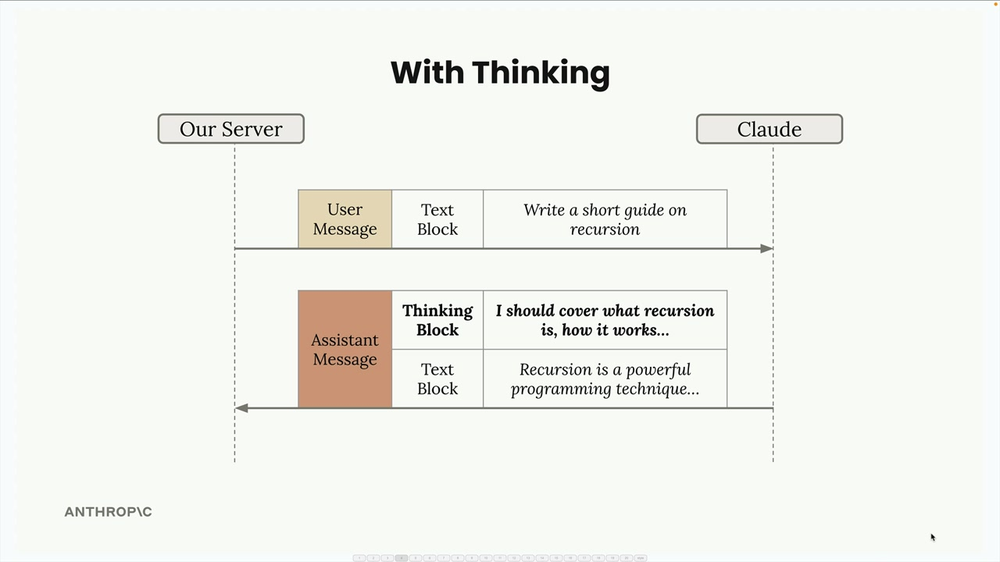
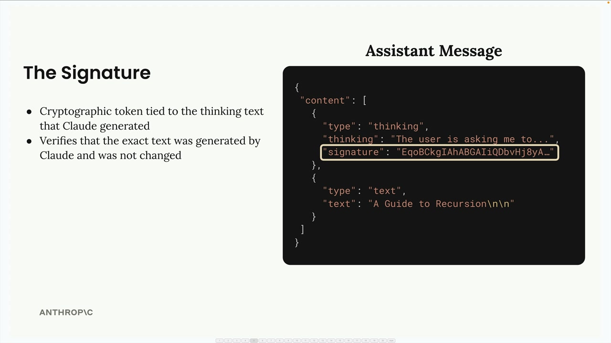
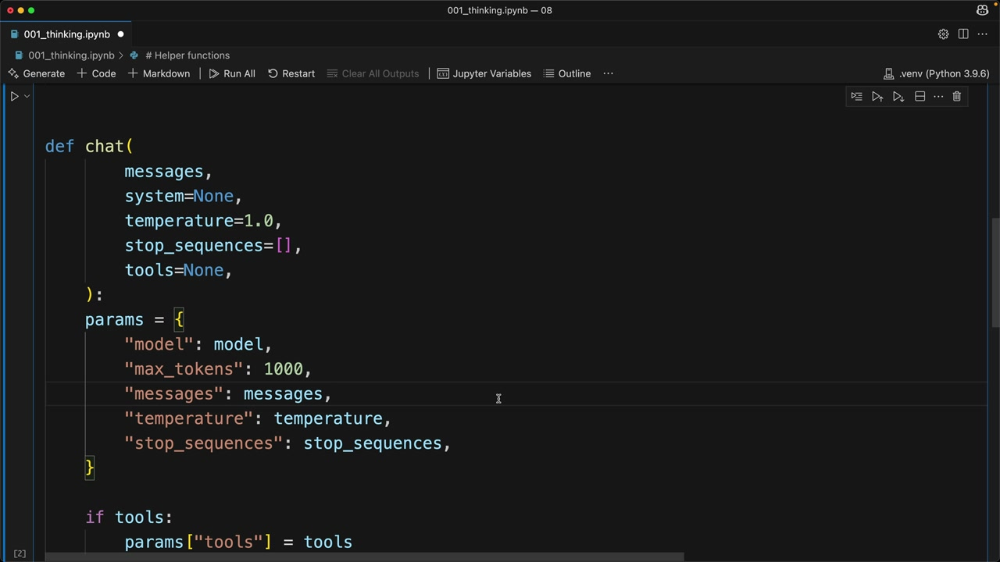

Extended thinking
Чему научитесь
Видео 7:01 и текст урока
К концу урока вы сможете:
- объяснить, что даёт режим рассуждений и чего он стоит;
- разобрать ответ с блоками thinking, signature и redacted thinking;
- включить рассуждения в функции
chat— и как это делается на текущих моделях.
Видео и текст урока.
Смотреть урок на Skilljar Extended thinking · 7:01Важно: extended thinking несовместим с некоторыми другими возможностями, в частности с prefill сообщения и с temperature. Полный список ограничений: https://docs.anthropic.com/en/docs/build-with-claude/extended-thinking#feature-compatibility
Extended thinking — режим продвинутых рассуждений Claude: модель получает время продумать сложную задачу, прежде чем дать итоговый ответ. Это как «черновик» Claude: виден ход рассуждений, который ведёт к ответу, — это даёт прозрачность и часто повышает качество ответа.
Как работает extended thinking
Когда режим включён, ответ Claude из одного текстового блока превращается в структурированный ответ из двух частей:

С включёнными рассуждениями вы получаете и процесс рассуждения, и итоговый ответ:

thinking (с полем signature) и блок text «A Guide to Recursion».Главные преимущества:
- лучшие рассуждения в сложных задачах;
- выше точность на трудных задачах;
- прозрачность хода мыслей Claude.
Но есть важные компромиссы:
- выше стоимость (токены рассуждений оплачиваются);
- выше задержка (рассуждение занимает время);
- сложнее обработка ответа в коде.
Когда использовать extended thinking
Решение простое — опирайтесь на оценку промптов. Сначала прогоните промпты без рассуждений, и если точность не дотягивает до требований даже после того, как вы оптимизировали промпт, — подумайте о включении extended thinking. Это инструмент на случай, когда обычного промптинга не хватает.
Структура ответа и безопасность
У ответов с рассуждениями есть специальная система подписи для безопасности:

Подпись (signature) — криптографический токен, который гарантирует, что вы не меняли текст рассуждения. Это не даёт разработчикам вмешиваться в процесс рассуждения Claude, что потенциально могло бы увести модель в небезопасном направлении.
Redacted thinking
Иногда вместо читаемого текста рассуждения приходит скрытый (redacted) блок рассуждения:

chat из ноутбука 001_thinking.ipynb до добавления параметров рассуждений.Так бывает, когда внутренние системы безопасности помечают процесс рассуждения Claude. Скрытый блок содержит само рассуждение в зашифрованном виде, так что сообщение целиком можно передать обратно Claude в следующих запросах, не теряя контекста.
Реализация
Чтобы включить extended thinking в коде, добавьте в функцию chat два параметра:
def chat(
messages,
system=None,
temperature=1.0,
stop_sequences=[],
tools=None,
thinking=False,
thinking_budget=1024
):
Бюджет рассуждений задаёт максимум токенов, которые Claude может потратить на рассуждение. Минимум — 1024 токена, а max_tokens должен быть больше бюджета рассуждений.
Добавьте настройку рассуждений в параметры API:
if thinking:
params["thinking"] = {
"type": "enabled",
"budget": thinking_budget
}
И вызовите с включёнными рассуждениями:
chat(messages, thinking=True)
Проверка скрытых ответов
Для тестирования можно заставить Claude вернуть скрытый блок рассуждения, отправив специальную строку-триггер. Так вы убедитесь, что приложение корректно обрабатывает скрытые ответы и не падает.
Extended thinking — мощная возможность для сложных задач на рассуждение, но пользуйтесь ей разумно, учитывая стоимость и задержку. Начните с обычного промптинга, оптимизируйте его, и включайте рассуждения, когда нужна дополнительная мощность.
Дальше
Следующий урок — работа с изображениями.
Оригинал урока: Extended thinking.